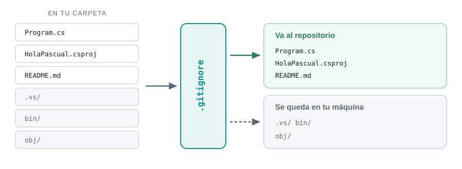
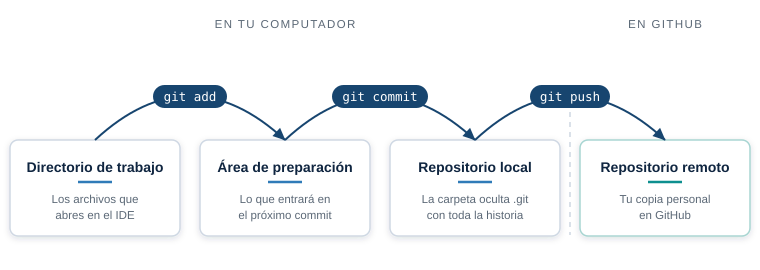
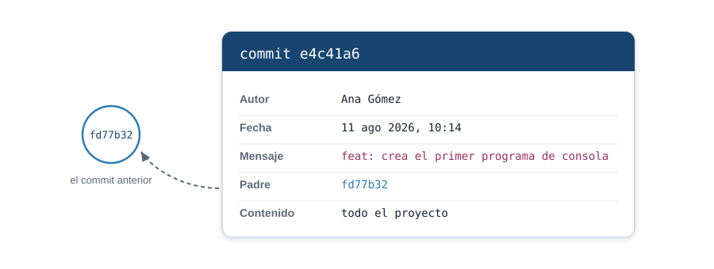
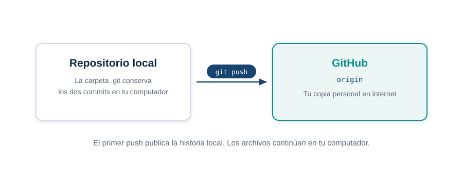

Semana 1. Entorno, Git y GitHub
| Asignatura | Herramientas de Programación I (ET0047) |
| Programa | Tecnología en Desarrollo de Software |
| Unidad | Unidad 1. Aplicaciones de consola con un IDE |
| Dedicación | 4 horas de encuentro sincrónico y 8 de trabajo independiente |
1 Lo que vas a lograr
La semana tiene dos sesiones. En la primera dejas el entorno instalado y un programa de C# ejecutándose. En la segunda conviertes ese mismo proyecto en un repositorio de Git y publicas su historial en GitHub.
Objetivos concretos:
- Explicar qué es un IDE y qué hace cada una de sus partes.
- Instalar y verificar el SDK de .NET, Visual Studio 2026 Community y Git.
- Crear, compilar y ejecutar un proyecto de consola desde la terminal y desde el IDE.
- Registrar cambios con
init,status,add,commit,logydiff. - Publicar el repositorio local en GitHub mediante un remoto y
push.
Las unidades 1 y 2 son programas de consola y corren igual en los tres sistemas. La unidad 3 usa Windows Forms, que solo existe en Windows. Desde la semana 11 vas a necesitar Windows: una máquina virtual, arranque dual o la sala de cómputo de la institución.
Ocúpate de esto ahora. Enterarte en la semana 11 te deja sin margen.
2 Sesión 1. El IDE y tu primer programa
Qué es un IDE
IDE significa Integrated Development Environment, entorno de desarrollo integrado. Es un solo programa que reúne las herramientas que necesitas para escribir software. Sin él tendrías que usarlas por separado, cada una con su propia forma de invocarse.
Estas son las partes que lo componen y para qué sirve cada una:
| Parte | Qué hace |
|---|---|
| Editor de código | Escribes el código. Colorea la sintaxis, autocompleta nombres y subraya los errores mientras escribes |
| Compilador | Traduce tu código a algo que la máquina puede ejecutar. Si hay errores de sintaxis, los reporta y no genera nada |
| Depurador | Detiene el programa en el punto que le indiques y te deja ver el valor de cada variable en ese instante |
| Gestor de proyectos | Organiza los archivos, las referencias y la configuración de compilación |
| Terminal integrada | Ejecuta comandos sin salir del entorno |
| Control de versiones | Registra el historial de cambios y lo sincroniza con un repositorio remoto |
En este curso el IDE es Visual Studio 2026 Community, el lenguaje es C# y la plataforma es .NET 10.
Conviene separar tres cosas que se confunden:
- C# es el lenguaje. Las palabras y las reglas con las que escribes.
- .NET es la plataforma. Las bibliotecas que ya vienen hechas y el motor que ejecuta tu programa.
- Visual Studio es el IDE. La herramienta con la que trabajas sobre los dos anteriores.
Puedes programar en C# sin Visual Studio. No puedes hacerlo sin .NET.
Versiones de referencia
Esta guía se probó con estas versiones. Instala la misma línea o una superior.
| Herramienta | Versión probada |
|---|---|
| SDK de .NET | 10.0.103 |
| Git | 2.50.0 |
| Visual Studio 2026 Community | 18.3 |
El número de Visual Studio viene del proyecto donde probé el resto del material, no de la máquina donde preparé esta guía. Si el instalador te ofrece otro, instálalo igual: cualquier versión de Visual Studio 2026 Community sirve para el curso.
Instalación paso a paso
1 SDK de .NET
Es lo que compila y ejecuta tu código. Descarga la versión 10 desde dotnet.microsoft.com/download.
Instala el SDK, no el Runtime. El Runtime solo ejecuta programas ya compilados. El SDK además los construye, que es justo lo que vas a hacer todo el semestre. Es el error de instalación más común del curso.
Acepta las opciones por omisión del instalador.
2 Visual Studio 2026 Community
Descarga desde visualstudio.microsoft.com. La edición Community es gratuita para estudiantes.
En el instalador aparece una lista de cargas de trabajo. Marca Desarrollo de escritorio de .NET. Con esa basta: incluye lo necesario para las aplicaciones de consola de las unidades 1 y 2 y para Windows Forms en la unidad 3.
No marques las demás cargas. Cada una suma varios gigabytes que no vas a usar.
La instalación pasa de 8 GB de descarga. Con una conexión doméstica puede tomar una hora larga. Empieza la descarga antes del encuentro sincrónico, no durante.
Deja 20 GB libres en disco antes de arrancar.
3 Git
Descarga desde git-scm.com/downloads y acepta las opciones por omisión.
Lo usarás en la segunda sesión para guardar el historial del proyecto que vas a crear.
4 Solo si usas macOS o Linux: VS Code
Visual Studio 2026 es únicamente para Windows. Microsoft retiró Visual Studio para Mac en agosto de 2024 y nunca existió para Linux.
Instala VS Code y la extensión C# Dev Kit, publicada por Microsoft:
code --install-extension ms-dotnettools.csdevkitCon VS Code y el SDK de .NET haces completas las unidades 1 y 2. Para la unidad 3 necesitas Windows.
Verificación
Abre una terminal nueva. Las que ya estaban abiertas no ven los cambios que los instaladores hicieron en el PATH, y los comandos van a fallar aunque la instalación esté bien.
Ejecuta:
dotnet --version
git --versionEstas son las respuestas reales de la máquina donde preparé la guía:
> dotnet --version
10.0.103
> git --version
git version 2.50.0.windows.2Los números pueden ser mayores que los de arriba y no pasa nada. Lo que importa es que ningún comando responda con un error.
Para ver todos los SDK instalados:
dotnet --list-sdks10.0.103 [C:\Program Files\dotnet\sdk]Tu primer programa desde la terminal
Vas a hacerlo primero sin el IDE. Así ves los pasos que Visual Studio automatiza, y te queda un camino que funciona aunque el IDE falle.
Paso 1: crea el proyecto
Ubícate en la carpeta donde guardas tus trabajos y ejecuta:
dotnet new console -o HolaPascualLa salida es esta. Donde dice <tu carpeta> va la ruta real de tu equipo:
La plantilla "Aplicación de consola" se creó correctamente.
Procesando acciones posteriores a la creación...
Restaurando <tu carpeta>\HolaPascual\HolaPascual.csproj:
Determinando los proyectos que se van a restaurar...
Se ha restaurado <tu carpeta>\HolaPascual\HolaPascual.csproj (en 91 ms).
Restauración realizada correctamente.Se creó una carpeta HolaPascual con dos archivos que importan.
Paso 2: mira lo que se creó
El primero es HolaPascual.csproj, el archivo de proyecto:
<Project Sdk="Microsoft.NET.Sdk">
<PropertyGroup>
<OutputType>Exe</OutputType>
<TargetFramework>net10.0</TargetFramework>
<ImplicitUsings>enable</ImplicitUsings>
<Nullable>enable</Nullable>
</PropertyGroup>
</Project>Dice cuatro cosas: que el resultado es un ejecutable, que apunta a .NET 10, que importa las bibliotecas más comunes sin que las escribas, y que avisa cuando una variable puede quedar sin valor.
El segundo es Program.cs, tu código:
// See https://aka.ms/new-console-template for more information
Console.WriteLine("Hello, World!");Dos líneas. Una de ellas es un comentario.
Paso 3: ejecútalo
Entra a la carpeta y ejecuta:
cd HolaPascual
dotnet runHello, World!Ya tienes un programa de C# funcionando.
Paso 4: escribe tu propio código
Abre Program.cs y reemplaza su contenido por esto:
// Herramientas de Programacion I - Semana 01
// Primer programa: entrada por teclado y salida por consola.
Console.WriteLine("Herramientas de Programacion I");
Console.WriteLine("Tecnologia en Desarrollo de Software");
Console.WriteLine();
Console.Write("Escribe tu nombre: ");
string? nombre = Console.ReadLine();
Console.WriteLine();
Console.WriteLine($"Hola, {nombre}. Tu entorno de desarrollo funciona.");Ejecuta dotnet run otra vez y escribe tu nombre cuando lo pida:
Herramientas de Programacion I
Tecnologia en Desarrollo de Software
Escribe tu nombre: Ana Maria
Hola, Ana Maria. Tu entorno de desarrollo funciona.Cuatro cosas nuevas aparecieron ahí:
Console.WriteLineescribe y salta de línea.Console.Writeescribe y se queda en la misma línea, que es lo que quieres cuando pides un dato.Console.ReadLineespera a que el usuario teclee algo y presione Enter, y devuelve lo que escribió.string? nombreguarda ese texto. El signo de interrogación advierte que podría no llegar nada.$"Hola, {nombre}."mete el valor de la variable dentro del texto. Se llama interpolación y la vas a usar todo el semestre.
Paso 5: compila sin ejecutar
dotnet run compila y ejecuta de un solo golpe. Cuando solo quieres saber si el código está bien escrito, usa:
dotnet build Determinando los proyectos que se van a restaurar...
Todos los proyectos están actualizados para la restauración.
HolaPascual -> <tu carpeta>\HolaPascual\bin\Debug\net10.0\HolaPascual.dll
Compilación correcta.
0 Advertencia(s)
0 Errores
Tiempo transcurrido 00:00:01.11Esas dos líneas del final, advertencias y errores, son las que vas a mirar cada vez que algo no funcione.
El mismo programa desde Visual Studio
Ahora repítelo con el IDE. El resultado es idéntico; cambia cuánto trabajo haces tú.
- Abre Visual Studio y elige Crear un proyecto.
- Busca la plantilla Aplicación de consola y confirma que dice C#. Hay plantillas con nombre parecido para otros lenguajes.
- Ponle nombre
HolaVisualy elige la carpeta donde guardas tus trabajos. - En la pantalla siguiente, deja .NET 10.0 como framework de destino.
- Presiona
F5para ejecutar.
Se abre una ventana de consola con la salida. Al lado tienes el Explorador de soluciones, que es el mismo .csproj y el mismo Program.cs de antes, presentados en forma de árbol.
Prueba el depurador
Esta es la razón principal para usar un IDE. Pega tu código de la sección anterior en el Program.cs de este proyecto y haz esto:
- Haz clic en el margen izquierdo, a la altura de la línea
string? nombre = Console.ReadLine();. Aparece un punto rojo: es un punto de interrupción. - Presiona
F5. El programa arranca y se detiene justo en esa línea, antes de ejecutarla. - Presiona
F10para avanzar una línea. Escribe tu nombre en la consola cuando lo pida. - Pasa el cursor sobre
nombre. Visual Studio te muestra el valor que tiene en ese momento. - Presiona
F5para dejar que termine.
Acabas de ver el programa por dentro mientras corre. Cuando un ejercicio dé un resultado raro, esto es lo que te dice por qué.
Errores frecuentes
Error 1
dotnet no se reconoce como comando
Causa. Abriste la terminal antes de instalar el SDK, así que esa ventana no ve el PATH nuevo.
Solución. Cierra todas las terminales y abre una nueva. Si el error sigue, vuelve a ejecutar el instalador del SDK y revisa que terminara sin errores.
Error 2
Instalé .NET pero dotnet build falla
Causa. Instalaste el Runtime en lugar del SDK. El Runtime ejecuta programas ya compilados y no sabe compilar.
Solución. Ejecuta dotnet --list-sdks. Si no imprime ninguna línea, no tienes SDK. Vuelve a dotnet.microsoft.com/download y descarga el que dice SDK.
Error 3
La ventana de la consola se cierra de inmediato
Causa. Ejecutaste con Ctrl+F5 en Visual Studio, o hiciste doble clic sobre el .exe. El programa termina y la ventana se va con él.
Solución. Ejecuta con F5, que mantiene la ventana abierta al terminar. También puedes agregar Console.ReadKey(); como última línea para que espere una tecla.
Error 4
El proyecto no compila y no encuentro qué cambié
Causa. Casi siempre falta un punto y coma, o hay una llave sin cerrar.
Solución. Mira la ventana Lista de errores de Visual Studio, o la salida de dotnet build en la terminal. Cada error trae archivo y número de línea. Corrige siempre el primero de la lista: un error temprano genera otros en cascada, y al arreglarlo suelen desaparecer varios.
Error 5
Los acentos y las eñes salen como símbolos raros en la consola
Causa. La consola de Windows usa una codificación distinta a la del archivo de código.
Solución. Escribe los mensajes sin tildes, como en los ejemplos de esta guía: es la opción que usa el curso por defecto. Si prefieres ver los acentos en tu propia consola, la Semana 2 trae la línea opcional que lo permite.
3 Cierre de la sesión 1
Antes de pasar a Git, confirma lo siguiente:
4 Sesión 2. Git y GitHub con HolaPascual
En esta sesión no creas otro ejercicio. Tomas HolaPascual, el proyecto que ya funciona, y le agregas un historial verificable. Al final tendrás el mismo proyecto en tu computador y en GitHub.
Abrir la presentación de Git y GitHub
Git y GitHub cumplen trabajos distintos
Git es el programa que registra cambios en tu computador. Funciona sin internet. GitHub es un servicio web que recibe una copia del repositorio para consultarla, compartirla y recuperarla desde otro equipo.
Un repositorio de Git guarda versiones del proyecto llamadas commits. Cada commit registra el autor, la fecha, un mensaje y el estado de los archivos en ese momento.

Configura tu identidad
Git necesita saber quién firma los commits. Ejecuta estos comandos una sola vez en tu computador. Reemplaza los datos de ejemplo por los tuyos. Usa el correo asociado a tu cuenta de GitHub si quieres que la plataforma relacione los commits con tu perfil.
git config --global user.name "Ana Maria Perez"
git config --global user.email "ana.perez@example.com"
git config --global init.defaultBranch mainComprueba la configuración:
git config --global user.name
git config --global user.email
git config --global init.defaultBranchAna Maria Perez
ana.perez@example.com
mainTu nombre y tu correo producirán una salida distinta.
Prepara el .gitignore de .NET
dotnet run, dotnet build y Visual Studio generan carpetas que puedes reconstruir. Versionarlas solo agrega archivos temporales y diferencias innecesarias. Crea un archivo llamado .gitignore en la raíz de HolaPascual con este contenido:
.vs/
bin/
obj/
*.user
*.suoEl punto inicial forma parte del nombre. En Windows, créalo desde Visual Studio o desde la terminal si el Explorador no acepta el nombre.

Inicia el repositorio y revisa su estado
Abre la terminal en la carpeta HolaPascual. No ejecutes git init en la carpeta que contiene todas tus clases.
git init
git status --shortLa primera orden crea la carpeta oculta .git. La segunda muestra los archivos que Git todavía no sigue:
?? .gitignore
?? HolaPascual.csproj
?? Program.cs?? significa “archivo nuevo sin seguimiento”. Las carpetas bin y obj no aparecen porque el .gitignore ya las filtró.
Agrega un README
Crea README.md en la raíz del proyecto:
# HolaPascual
Primer programa de consola de Herramientas de Programación I.Este archivo explica el propósito del repositorio cuando alguien lo abre en GitHub.
Prepara y registra el primer commit
Git trabaja con tres zonas: los archivos que editas, el área de preparación y el historial. add selecciona lo que entrará al próximo commit. commit registra esa selección.

Escribe mensajes de commit con una convención
Git acepta cualquier texto como mensaje. En este curso adoptamos Conventional Commits como convención de equipo para que el historial sea fácil de leer. La forma básica es:
tipo: descripción breveCuando el proyecto crezca, puedes añadir un alcance entre paréntesis para indicar qué parte cambió:
tipo(alcance): descripción breveEscribe la descripción en minúscula, con un verbo que diga qué hace el cambio y sin punto final. El alcance es opcional. Por ejemplo, salida, entrada, readme o config.
| Tipo | Cuándo usarlo | Ejemplo en HolaPascual |
|---|---|---|
feat |
Agregas una funcionalidad que la persona usuaria puede observar | feat(entrada): solicita el nombre |
fix |
Corriges un comportamiento incorrecto | fix(salida): evita saludar con un nombre vacío |
docs |
Cambias documentación, como README.md, sin cambiar el programa |
docs: explica cómo ejecutar HolaPascual |
style |
Cambias formato, espacios o sangría sin alterar el comportamiento | style: ordena la sangría de Program.cs |
refactor |
Reorganizas el código sin agregar funcionalidad ni corregir un fallo | refactor: extrae la construcción del saludo |
test |
Agregas o ajustas pruebas automatizadas | test: verifica el saludo con nombre |
chore |
Haces mantenimiento o configuración sin agregar funcionalidad | chore: configura el gitignore de .NET |
style no significa cambiar el diseño de la salida del programa: solo cubre formato del código sin cambio de comportamiento. chore cubre tareas de mantenimiento, configuración o dependencias que tampoco agregan funcionalidad.
Compara estos mensajes:
| Mensaje | Veredicto | Razón |
|---|---|---|
feat: crea el primer programa de consola |
Bueno | Declara el tipo y el resultado del cambio |
feat(salida): informa que Git registra el cambio |
Bueno | Añade un alcance útil y explica el comportamiento |
cambios |
Malo | No declara tipo ni explica qué cambió |
fix cosas |
Malo | No usa la forma de la convención y sigue siendo impreciso |
feat: actualiza Program.cs |
Malo | Nombra el archivo, pero no explica el propósito del cambio |
Ejecuta:
git add .
git status --shortA .gitignore
A HolaPascual.csproj
A Program.cs
A README.mdLa A indica que cada archivo está preparado. Registra el commit:
git commit -m "feat: crea el primer programa de consola"El texto que imprime Git incluye un hash y un conteo de líneas que varían según tu proyecto. La comprobación estable es esta:
git status --short
git log --onelinestatus no imprime nada cuando no quedan cambios. log muestra una línea similar a esta:
<hash> feat: crea el primer programa de consola<hash> representa los primeros caracteres del identificador real de tu commit.

Observa un cambio antes de registrarlo
Agrega esta instrucción al final de Program.cs:
Console.WriteLine("Este cambio queda registrado con Git.");Mira la diferencia:
git diffLa salida muestra las líneas anteriores con - y las nuevas con +. Los encabezados y números de línea dependen del contenido actual de tu archivo. Confirma el cambio con:
git status --short M Program.csEl espacio antes de M indica que modificaste el archivo en el directorio de trabajo, pero todavía no lo preparaste. Regístralo:
git add Program.cs
git commit -m "feat(salida): informa que Git registra el cambio"
git log --onelineEl historial queda en este orden:
<hash nuevo> feat(salida): informa que Git registra el cambio
<hash inicial> feat: crea el primer programa de consolaLos hashes serán distintos en cada computador. Los mensajes y el orden deben coincidir.
Crea el repositorio vacío en GitHub
- Inicia sesión en github.com.
- Selecciona New repository.
- Escribe
HolaPascualcomo nombre. - Elige visibilidad pública o privada según prefieras.
- Deja sin marcar Add a README file, Add .gitignore y Choose a license.
- Selecciona Create repository.
El repositorio debe quedar vacío porque tu computador ya tiene los primeros commits. Si GitHub crea otro commit con un README, aparecen dos historias que todavía no necesitas reconciliar.
Conecta y publica
Copia la URL HTTPS que GitHub muestra para el repositorio. Sustituye <usuario> por tu nombre de usuario real:
git remote add origin https://github.com/<usuario>/HolaPascual.git
git remote -v
git push -u origin mainremote add guarda la dirección con el nombre origin. push envía los commits y -u deja conectada la rama local main con la remota. GitHub puede abrir el navegador para que autorices el acceso. Esa pantalla y la salida de la terminal cambian según el sistema y el método de autenticación.

Recarga la página del repositorio y comprueba que aparecen Program.cs, HolaPascual.csproj, README.md, .gitignore y los dos commits. No deben aparecer .vs, bin ni obj.
El flujo que repetirás
Después del primer push, el ciclo cotidiano es corto:
git status
git diff
git add <archivo>
git commit -m "tipo: describe el cambio"
git pushUsa mensajes que expliquen el cambio. feat: agrega el saludo por nombre informa más que cambios o actualiza Program.cs.
Una rama permite trabajar aparte de main. Un Pull Request propone incorporar esa rama desde GitHub y facilita revisar el cambio. Los usarás cuando el proyecto necesite colaboración. En esta sesión basta con reconocer los conceptos; conflictos, etiquetas y reversión quedan para otro momento.
5 Lista de chequeo de la semana
6 Trabajo independiente
Completa estas actividades después de cada sesión:
- Después de la sesión 1: termina la instalación, repite el proyecto sin mirar la guía, provoca un error de compilación y recorre el programa con el depurador.
- Después de la sesión 2: repite el flujo de Git en un proyecto de prueba, amplía el
README.md, registra el cambio y publícalo congit push.
Conserva HolaPascual: lo usarás como referencia cuando empieces con variables y entrada de datos en la Semana 2.
7 Recursos
- SDK de .NET: dotnet.microsoft.com/download
- Visual Studio Community: visualstudio.microsoft.com
- Git: git-scm.com/downloads
- GitHub: docs.github.com
- Referencia de Git: git-scm.com/docs
- Documentación de C#: learn.microsoft.com/dotnet/csharp
Herramientas de Programación I (ET0047). Institución Universitaria Pascual Bravo. Facultad de Ingeniería. Semestre 2026-02.
Transparencia. La redacción de esta guía contó con el apoyo de inteligencia artificial, usando el modelo Claude Opus 5 de Anthropic. Todo el contenido fue revisado y validado. Las salidas de terminal son reales, tomadas durante la preparación del material.